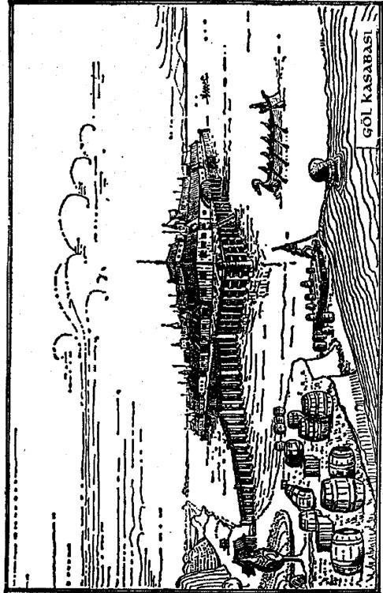

T3ÖUJCT) lO
S I C A k B İ R k A R Ş l L ^ C D A
Onlar suyun üzerinde gidedururl arken
gün ışıyıp aydınlandı. Bir süre sonra
nehir onların soluna düşen tarafta dik bir
yamacın etrafını döndü. Bir iç-yar gibi
kayalık eteklerinin altında iyice
derinleşen akıntı şırıldayarak ve
köpürerek akıyordu. Aniden yar alçaldı.
Kıyıların yükseltisi azaldı. Ağaçlar bitti.
Sonra Bilbo bir manzarayla karşılaştı:
Ufak derelere bölünüp belki yüzlerce
yatakta kıvrılarak akan ya da her tarafı
adacıklarla beneklenmiş, ama yine de
ortalarından kuvveüi bir suyun aktığı
havuzcuk ve bataklıklarla kesilen nehrin
sularıyla dolu bir arazi çevresinde
olabildiğince uzuyordu. Ve uzaklarda
Dağ, karanlık başıyla bir bulutu delmiş,
belli belirsiz gözüküyordu! Kuzey-
Doğuya bakan en yakın çevresi ve onjLi
buralara bağlayan engebeli arazi
görülemiyordu. Dağ
tek başına yükseliyor ve bataklıkların
üzerinden ormana bakıyordu. Yalnız
Dağ! Bilbo bunca yolu bir sürü macera
yaşayarak onu görmek için gelmişti, ama
şimdi görünüşünü zerre kadar
beğenmemişti.
Bilbo salcıların konuşmalarını
dinleyerek ve ağızlarından kaçırdıktan
bilgi kırıntıcıklarını birbirlerine
ekleyerek, onu bu denli uzaktan bile
görmekte ne kadar şanslı olduğunun
farkına vardı kısa sürede. Tutsaklığı
kasvetli ve durumu (altındaki zavallı
cücelerden hiç bahsetmeyelim) hiç de
hoş
olmamasına rağmen şansı tahmin
ettiğinden daha yaver gitmişti. Konuşma
tümüyle, suyollanyla gidip gelen